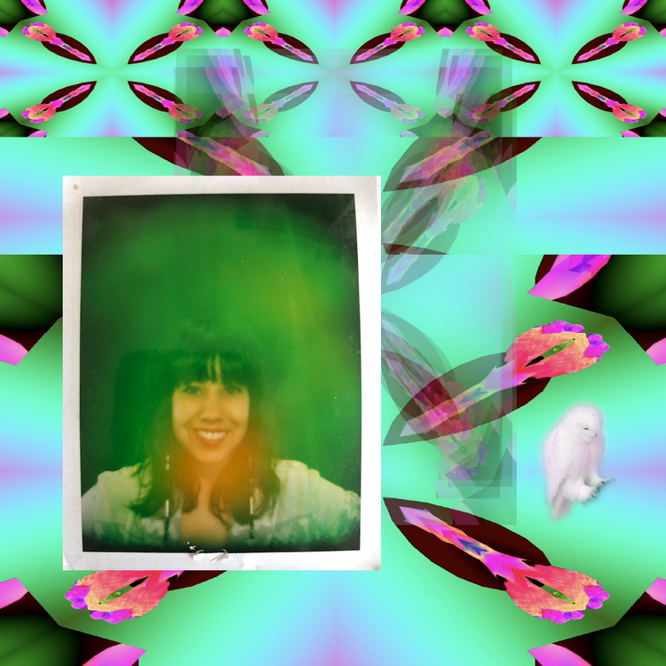
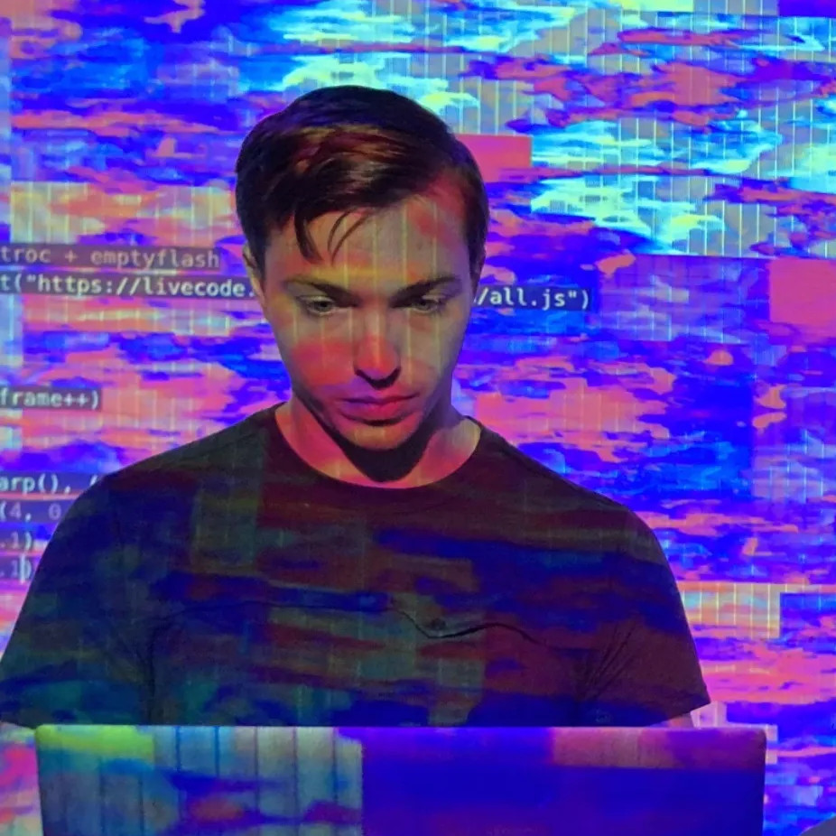
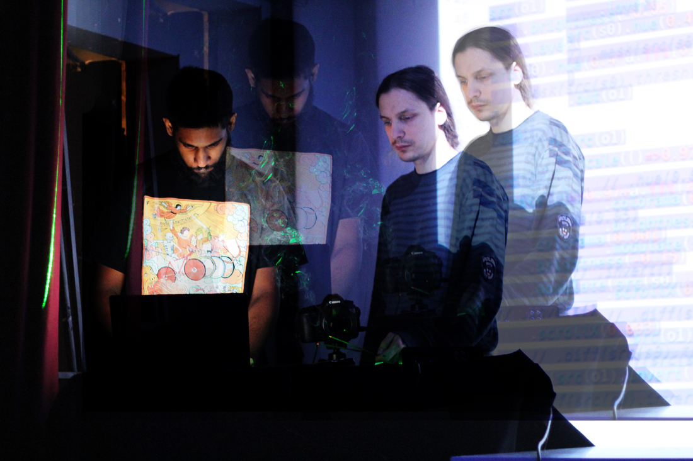
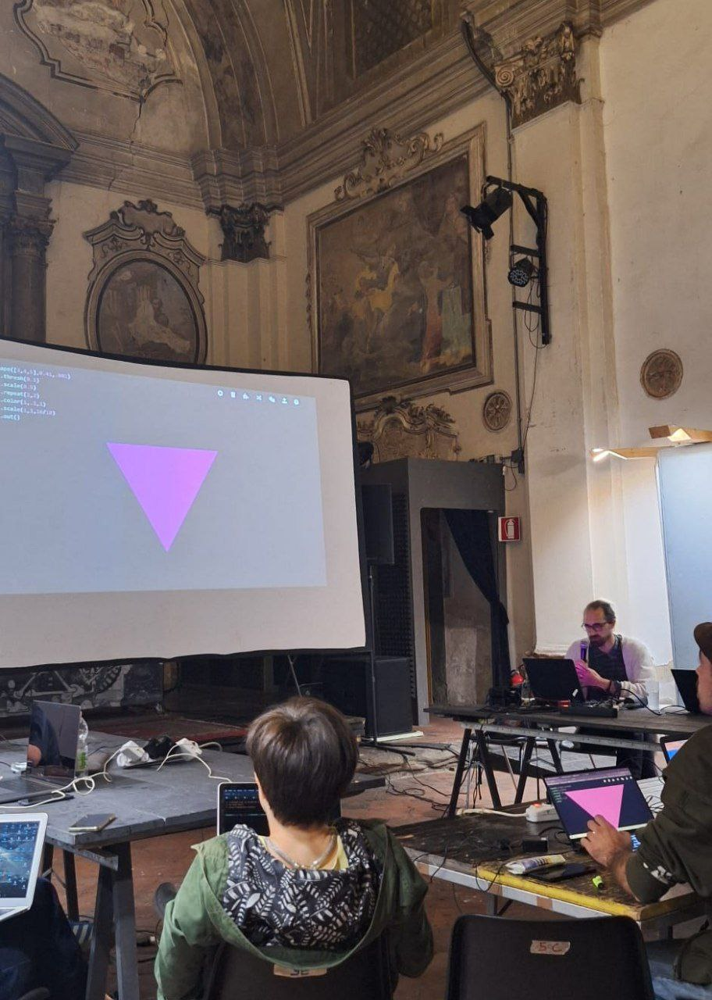

The recipients of hydra microgrants for 2024-2025 are:
- Melanie Marie
- Cameron Alexander
- Satyarth Mishra Sharma
- Kevin Smuggles (toplap italia)
- dmtxt & librenauta (CLiC - Nodo Sur)
- Violetta Postnova
Melanie Marie
Melanie Marie (Melanie Wilson) is a self- taught coder, designer, and digital artist. With a multi-disciplinary approach, she focuses on creating visual experiences by deconstructing themes and imagery. Her process is influenced by the hip hop beat community; sampling and resampling to create new textures and materials for final renders or for livecoding. She uses P5.JS, Three.JS, Blender, and Hydra Video Synth.
She lives in Oakland, California with 3 cats. She loves learning graphics programming, blender, running, and attending pow wows.
₊˚ 🦢☻ ・₊❂˚✧
With the micro-grant, I will be creating a web zine which will include tutorials and documentation showing my process. Additionally as an ode to ASCII and Unicode, I want to create an extension that translates the pixels of an image or video into Unicode including emojis and emoticons.
https://www.instagram.com/melanie_mmarie/ | https://projectvisualsensation.com/
Cameron Alexander
Cameron Alexander (emptyflash) is an artist, programmer, and scientist based in New York. He is interested in the implications the tools we use have on what we create and the aesthetics that emerge from the spaces in between. His work explores these spaces and draws parallels to the relationship between math and nature (especially in chaos, cybernetics, and fractals), esoteric states of consciousness, and the essence of reality. Cameron primarily operates with experimental media such as interactive installations, live coded audiovisual performances, and alternative-process photography.
For this project Cameron will develop hydra-datamosh, a hydra extension that uses WebCodecs to apply video datamoshing techniques to primitives.
https://emptyfla.sh | https://post.lurk.org/@emptyflash@toplap.org | https://www.instagram.com/emptyflash_/
Satyarth Mishra Sharma
Ayo! I’m a researcher and artist/musician who loves to dabble in livecoded sounds and visuals. Discovering hydra back in 2019 changed my life and gave me the chance to participate in lots of cool events and meet amazing people. I’ve tried to pay it forward by teaching the occasional workshop, and I want to take it further by recording a video tutorial series in Hindi. There’s a wealth of resources on hydra online, and quite a lot of Indians speak english, but I think accessible resources in Hindi can open up the magic of hydra for many people who wouldn’t have discovered it otherwise, and change their lives just like it did mine!
http://satyarth.me/cactus-juice/ | https://www.instagram.com/cactus.juice.yum/ | https://social.toplap.org/@satyarth
Kevin Smuggles (toplap italia)
Kevin Smuggles is the audiovisual project of Alberto Bertocci, teacher, scientific by formation, who’ve been caught up by hydra video synthesis. A self-taught passion for computer graphics has become a new form of representation of live systems, and a tool to mix artistic expression with logical signal mixing. I run a newborn workshop to spread the knowledge about live coding and the hydra video project, inviting guests to talk, and, in the future, to perform as well. Everyone is invited to play at the meetings, at the end we will make an algorave.
Reaching over by chat, live coders from toplapitalia found in this the opportunity to kickstart the formation of a collective of creative coders or coding enthusiasts. This grant will help to fund the workshop, and we think will provide enough resources to provide Italian translations. Moreover, thinking about local traditions of mail art and paper crafts, we wish to develop a set of tools in hydra for custom printing layouts and quick paper-like filters. A new sense of digital creativity and the feeling with the final work shall bring love back to the hydra community!
https://www.instagram.com/kevinsmuggles/ | https://toplapitalia.gitlab.io/workshopcsb.html | https://toplapitalia.gitlab.io/
dmtxt & librenauta (CLiC - NODO SUR)
dmtxt
livecoder / collective artist
A digital entity forged through dream-writing and its coding, resulting in a programmatic will transformed into moving images directly from the browser using #hydravideosynth. Active member of the southern node of the live coders collective in Patagonia, Argentina.
https://www.instagram.com/dmtxt___/ | https://bosquereset.xyz/tecnopoesia/ | https://odysee.com/@dmtxt:c
librenauta
fan of what is being built on the internet, he grows a web garden and shares information with friends. designer, artivist. he is part of the southern node of the live coders collective [CLiC] in Patagonia Argentina.
https://www.instagram.com/librenau | https://twitter.com/librenauta | https://copiona.com/
We will offer an intensive Hydra seminar, focused on collectivizing both theoretical and practical methods of visual creation, through a face-to-face meeting. Then, from the contributions and expressions of the participants, we will elaborate a publication in physical format (translucent paper/film), which will be printed and disseminated with the contributions of those who attended the event.
Violetta Postnova
An art director, designer, and author of educational programs for designers. I specialize in web design and UI. I experiment with creating real-time computer programming, acting as a live-coding artist.
Since 2023 , I have been working on developing a non-profit educational project, École libre d’art et de design. Our mission is to create a free and inclusive space for education and creativity, where Russian-speaking designers and artists can develop their skills and ideas without fear of censorship or repression. As part of this program, I plan to conduct a HydraEditor workshop.